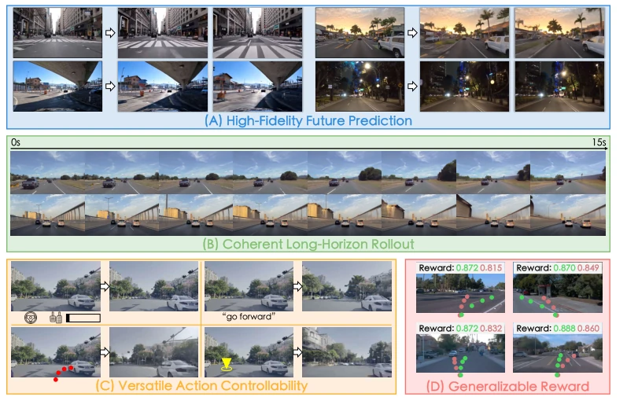
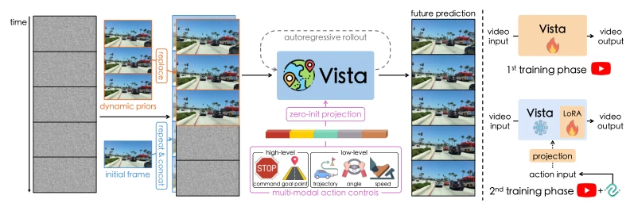
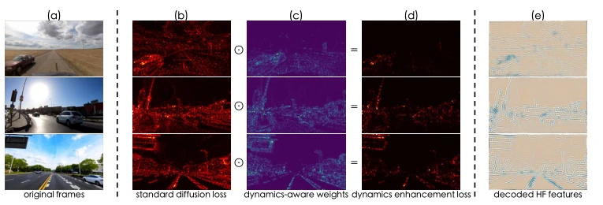
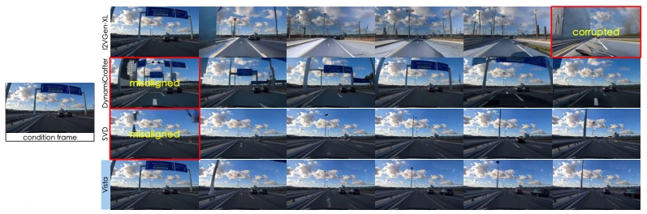
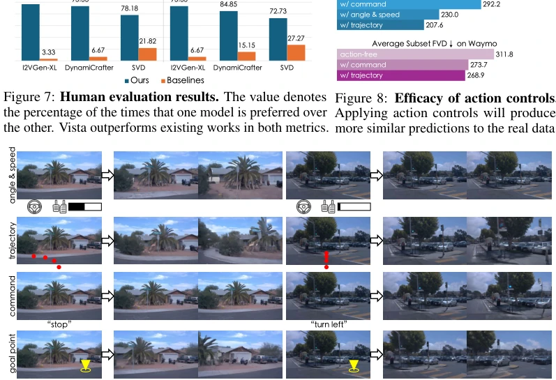
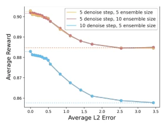
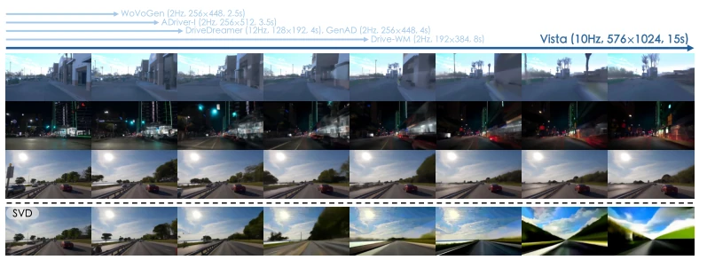
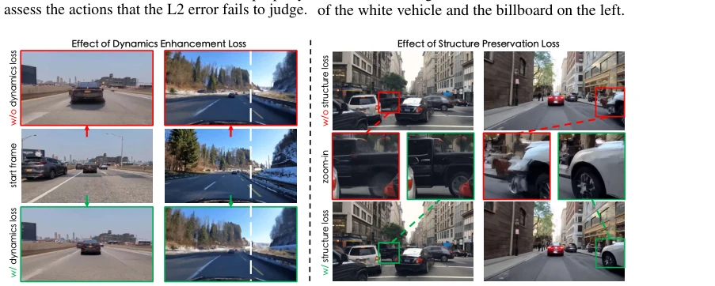
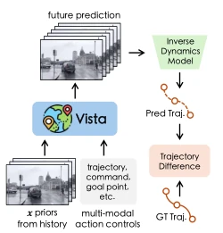
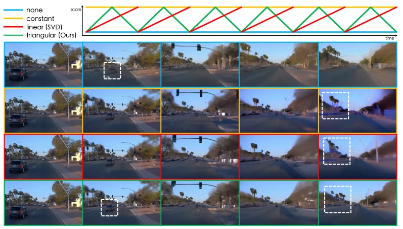

Vista: A Generalizable Driving World Model with High Fidelity and Versatile Controllability
Shenyuan Gao, Jiazhi Yang, Li Chen, Kashyap Chitta, Yihang Qiu, Andreas Geiger abspdf
论文点评Review
Vista 算是给自动驾驶世界模型领域灌了一剂强心针，毕竟 576x1024 分辨率和 10Hz 帧率确实让之前的低清模型显得有点“模糊”。它基于 SVD 魔改，搞出了高保真预测和多模态控制，这点值得点赞。不过，依赖预训练大模型毕竟不是白给的，计算开销估计不小，而且论文里也没细说推理延迟到底能不能满足实时规划。最有趣的是它把世界模型本身当奖励函数用，这思路挺野，但方差估计稳不稳还得看运气。总的来说，是个漂亮的工程堆叠，但离真正的通用智能还有距离。此外，虽然泛化性提升明显，但在极端 corner case 下的表现仍需更多验证，毕竟训练数据主要来自公开数据集，真实世界的长尾问题未必能完全覆盖。
Vista can be considered a strong shot in the arm for the autonomous driving world model field, after all the 576x1024 resolution and 10Hz frame rate indeed make previous low-definition models appear somewhat "blurry". It is based on a heavily modified SVD, achieving high-fidelity prediction and multimodal control, which is worth praising. However, relying on pre-trained large models is certainly not free; the computational overhead is estimated to be significant, and the paper does not detail whether the inference latency can truly meet real-time planning requirements. Most interestingly, it uses the world model itself as a reward function; this idea is quite bold, but whether the variance estimation is stable depends on luck. Overall, it is a beautiful engineering stack, but still far from true general intelligence. In addition, although generalization is significantly improved, performance in extreme corner cases still needs more verification, after all, training data mainly comes from public datasets, and long-tail problems in the real world may not be fully covered.
Existing driving world models generally suffer from "three major sins": poor generalization, poor image quality, and single control. Table 1 shows that models like DriveGAN [102] and DriveDreamer [125], either have small data volumes or resolutions so low that details cannot be seen clearly. Although GAIA-1 [54] has large data, the resolution is still not high enough. More fatally, most of them only support steering angle and speed, unable to be compatible with trajectories or intents output by planning algorithms [12, 21, 58]. This single control modality makes it difficult for the model to be flexibly applied in unseen scenarios. In addition, long-term prediction often collapses due to lack of dynamic priors, leading to unreliable action evaluation. Vista is precisely to solve these pain points, attempting to make breakthroughs in generalization and controllability. Especially for real-world deployment, detail loss caused by low resolution will seriously affect safety assessment, and lack of multimodal control limits its practicality in complex planning tasks.

Figure 2: Capabilities of Vista. Starting from arbitrary environments, Vista can anticipate realistic and continuous futures at high spatiotemporal resolution (A-B). It can be controlled by multi-modal actions (C), and serve as a generalizable reward function to evaluate real-world driving actions (D).
方法Method
Vista 采用两阶段训练。第一阶段聚焦高保真预测，基于 SVD 架构，但做了关键修改。首先，引入“潜在替换”机制，用连续三帧编码的 clean latent 替换 noisy latent，注入位置、速度、加速度等动态先验，解决长时程一致性。其次，设计了两个新损失：Dynamics Enhancement Loss 通过加权相邻帧差异，聚焦运动区域；Structure Preservation Loss 在频域监督高频特征，防止物体边缘模糊。第二阶段学习可控性，将角速度、轨迹、指令等异构动作通过 Fourier embeddings 统一编码，利用 LoRA 适配器微调 UNet，既保留预训练能力又实现高效学习。最后，利用生成不确定性构建可泛化的奖励函数，无需真实动作标签即可评估。这种设计使得模型既能保持生成质量，又能灵活响应不同粒度的控制信号，实现了从意图到执行的端到端映射。
Vista adopts two-stage training. The first stage focuses on high-fidelity prediction, based on the SVD architecture, but with key modifications. First, introduce a "latent replacement" mechanism, replacing noisy latent with clean latent encoded from three consecutive frames, injecting dynamic priors such as position, velocity, acceleration, etc., to solve long-term consistency. Second, designed two new losses: Dynamics Enhancement Loss focuses on motion regions by weighting adjacent frame differences; Structure Preservation Loss supervises high-frequency features in the frequency domain to prevent object edge blurring. The second stage learns controllability, unifying encoding of heterogeneous actions such as angular velocity, trajectory, instructions, etc., through Fourier embeddings, using LoRA adapters to fine-tune UNet, retaining pre-trained capabilities while achieving efficient learning. Finally, utilize generation uncertainty to build a generalizable reward function, capable of evaluation without real action labels. This design allows the model to maintain generation quality while flexibly responding to control signals of different granularities, achieving an end-to-end mapping from intent to execution.

Figure 3: [Left]: Vista pipeline. In addition to the initial frame, Vista can absorb more priors about future dynamics via latent replacement. Its prediction can be controlled by different actions and be extended to long horizons through autoregressive rollouts. [Right]: Training procedure. Vista takes two training phases, where the second phase freezing the pretrained weights to learn action controls.

Figure 4: Illustration on loss design. Different from the standard diffusion loss (b) that is distributed uniformly, our dynamics enhancement loss (d) enables an adaptive concentration on critical regions (c) (e.g., moving vehicles and roadsides) for dynamics modeling. Moreover, by explicitly supervising high-frequency features (e), the learning of structural details (e.g., edges and lanes) can be enhanced.
Experiments were conducted on nuScenes and Waymo, comparing SOTA models like DriveGAN, GenAD, and general-purpose video generators. Quantitatively, Vista leads significantly in FID and FVD, with FID dropping to 6.9. Human evaluation shows it outperforms baselines in both visual quality and motion rationality. Ablation studies prove that dynamic priors and the two loss functions are crucial for improving trajectory consistency. Control experiments show that introducing actions of different modalities can significantly reduce trajectory differences. Reward function experiments show that the larger the deviation, the lower the reward, and it can correct misjudgments of L2 errors. However, as an unseen domain, Waymo still shows performance degradation, indicating generalization still needs strengthening. In addition, regarding training efficiency, the strategy of low-resolution pre-training followed by fine-tuning effectively balances quality and speed, but memory usage during inference remains a potential bottleneck.

Figure 5: Driving futures predicted by different models using the same condition frame. We contrast Vista to publicly available video generation models using their default configurations. Whilst previous models produce misaligned and corrupted results, Vista does not suffer from these caveats.

Figure 9: Versatile action controllability. Vista can predict the corresponding outcomes in response to multi-modal action conditions across diverse scenarios. More results can be found in Appendix E.

Figure 14: Sensitivity of reward estimation to hyperparameters. Increasing the number of denois- ing steps can produce more dis- criminative rewards, whereas in- creasing the ensemble size can slightly stabilize the estimations.
其他图片Other Figures

Figure 6: [Top]: Long-horizon prediction. Vista can forecast 15 seconds high-resolution futures without much degradation, encompassing long driving distances. The length of the blue lines indicate the duration of the longest prediction showcased by previous works. [Bottom]: Long-term extension results of SVD. SVD fails to generate consistent high-fidelity videos autoregressively as Vista does.

Figure 12: [Left]: Effect of dynamics enhancement loss. The model supervised by the dynamics enhancement loss generates more realistic dynamics. In the first example, instead of remaining static, the front car moves forward normally. In the second example, when the ego-vehicle steers right, the trees shift towards the left naturally adhering to the real-world geometric rules. [Right]: Effect of structure preservation loss. The proposed loss yields a clearer outline of the objects as they move.

Figure 13: An illustration of the IDM experiments in Table 3.

Figure 15: Effect of guidance scale. We predict 15s long-term videos with different CFG schemes. Our method achieves the optimal equilibrium between detail generation and saturation maintenance.